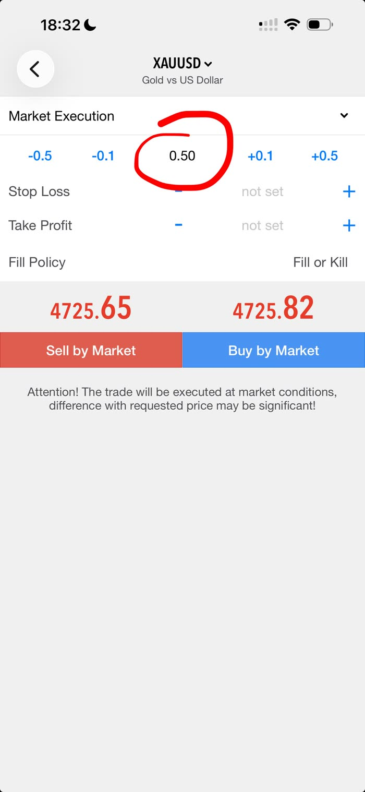
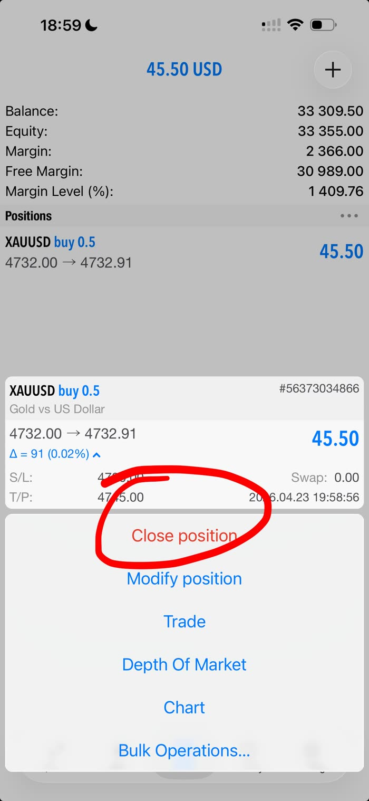
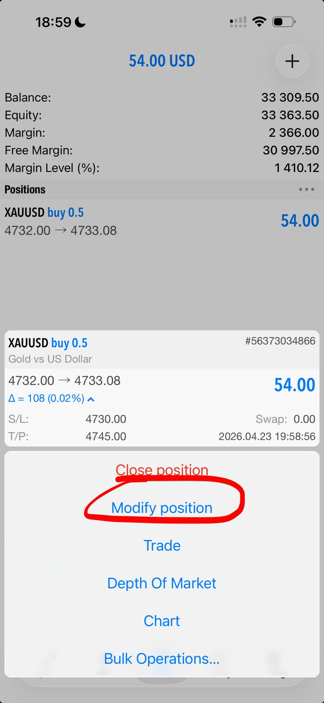

01 - Разбираем сетап
Что всё это значит
В каждом сетапе одни и те же параметры. Ничего придумывать не нужно: твоя задача - просто повторить.
XAUUSD
Торговая параXAU = золото, USD = доллар. Торгуем цену золота в долларах. Точно так же EURUSD - евро к доллару, GBPUSD - фунт к доллару.
BUY
Покупаем, ждем ростаЗарабатываем, если цена идет вверх.
SELL
Продаем, ждем паденияЗарабатываем, если цена идет вниз.
Вход 📍
Точка входаДиапазон цены, по которой заходим. Если в BUY-сетапе вход 4170-4172, а цена уже 4180, ты опоздал: такой сетап пропускаем.
SL ❌
Stop Loss - страховкаЕсли цена пошла не туда, сделка сама закроется с небольшим минусом. Без стопа можно потерять весь депозит за одну сделку. Ставим всегда.
TP ▶️
Take Profit - целиУровни, где фиксируем прибыль. TP1, TP2, TP3, TP4: чем дальше, тем больше профит. На каждом тейке закрывается часть позиции.
БУ
БезубытокКогда в канале пишем «стоп в БУ», переносишь Stop Loss на свою точку входа. Подробно ниже.
02 - Открываем сделку
Алгоритм в MetaTrader 5
Торгуем через приложение MT5 (App Store или Google Play), подключенное к твоему счету. Как установить и войти - в гайде «Терминал MT5».
1
Находишь актив в котировкахОткрываешь раздел Quotes, находишь XAUUSD (или пару из сетапа) и нажимаешь на нее.

Нажимаешь на XAUUSD → выбираешь Trade
2
Выставляешь лотОбъем позиции считаешь калькулятором в гайде «Риск-менеджмент». Нажимаешь на цифру в центре и меняешь. Не бери максимум. 
Лот (объем) - цифра в центре. Цены на скрине другие, чем в сетапе выше: это просто пример интерфейса.
3
Вводишь SL и TP из сетапаНажимаешь на поле Stop Loss и вводишь цифру из сетапа. То же самое с Take Profit. Строго как написано, ничего не меняешь.

Вводишь Stop Loss и Take Profit точно как в сетапе. На скрине они уже заполнены.
4
Нажимаешь Buy by Market или Sell by MarketВ зависимости от направления сетапа. Всё, сделка открыта.

Оранжевая кнопка внизу закрывает уже открытую позицию и появляется только тогда, когда она есть. Новая сделка открывается кнопками Sell / Buy by Market.
03 - Закрываем позицию
Как закрыть сделку вручную
Тейки и стоп срабатывают сами. Но если нужно выйти раньше или закрыть часть позиции:

Раздел Trade → нажимаешь на сделку → Close position

Изменить SL или TP - Modify position. Так же переносим стоп в безубыток.
Позиции на скринах - для примера. Цифры могут отличаться от реального сетапа, здесь показана только механика.
04 - Размер лота
Сколько ставить на сделку
Лот - это объем позиции. На золоте при лоте 0.01 каждый $1 движения цены = $1 прибыли или убытка. При лоте 0.1 - уже $10.
Поэтому лот считаем от стопа: сначала решаешь, сколько готов потерять (2-5% депозита), потом делишь на расстояние до стопа.
| Депозит | Риск 3% | Лот при стопе $15 |
|---|
| $300 | $9 | 0.01* |
| $500 | $15 | 0.01 |
| $1 000 | $30 | 0.02 |
| $2 000 | $60 | 0.04 |
| $3 000 | $90 | 0.06 |
| $5 000 | $150 | 0.10 |
* 0.01 - минимальный лот. На $300 риск будет чуть больше 3% (~5%).
🧮
Калькулятор лотаВводишь депозит, риск, вход и стоп - получаешь лот
→
Если тейков несколько, лот делишь поровну. Открыл 0.08 с четырьмя тейками → по 0.02 на каждый. Цена дошла до TP1 - закрылась четверть позиции, остальное идет дальше.
05 - Безубыток
Что значит «стоп в БУ»
Иногда в канале пишем: «Переносим стоп в безубыток». Вот как это делается:
💡 Логика простая
SELL по золоту, вход 4706, стоп 4725. Цена взяла TP1 на 4701, первую прибыль уже забрали. Открываешь позицию → Modify position → меняешь Stop Loss с 4725 на 4706 (точку входа). Теперь, даже если цена развернется, ты в нуле. А если пойдет дальше - берем TP2, TP3, TP4.

Нажимаешь на сделку → Modify position

Ставишь Stop Loss на цену входа → Modify. Всё, ты в безубытке.
Gudzchamp FXSELL XAUUSD 📍 4706-4708 ✅ Take profit 1: 4701 ✅ Take profit 2...
Если у вас консервативная торговля, переносите стоп лосс по XAUUSD в безубыток. Если риск-менеджмент позволяет, держите позицию дальше.
👁 980 · 11:04
Так выглядит сообщение в канале
07 - Опоздал
Что делать, если пропустил вход
Бывает: не смотрел в телефон, а цена уже ушла. Без паники.
Цена ушла в профит без тебя
Дальше чем на $2-3 от входа - пропускаем. Стоп становится далеко, риск больше, а прибыль меньше.
Цена немного пошла против
Но еще не дошла до стопа - можно заходить: риск даже меньше, чем в сетапе.
Пропущенный сетап - это не потеря. Потеря - это прыгнуть в уже ушедший поезд и выйти в минус. Сетапы приходят каждый день.
Всё понятно - что дальше? 🤝
В комьюнити мы с командой каждый день даем сетапы в реальном времени, объясняем каждый вход и сопровождаем сделку до закрытия.
Присоединиться через @gudzchamp_fx_bot